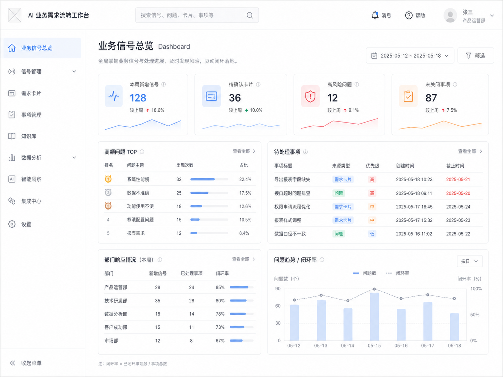
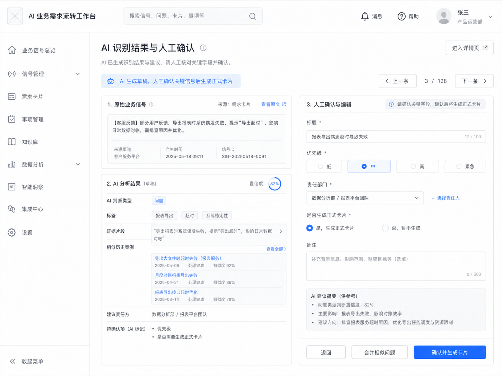
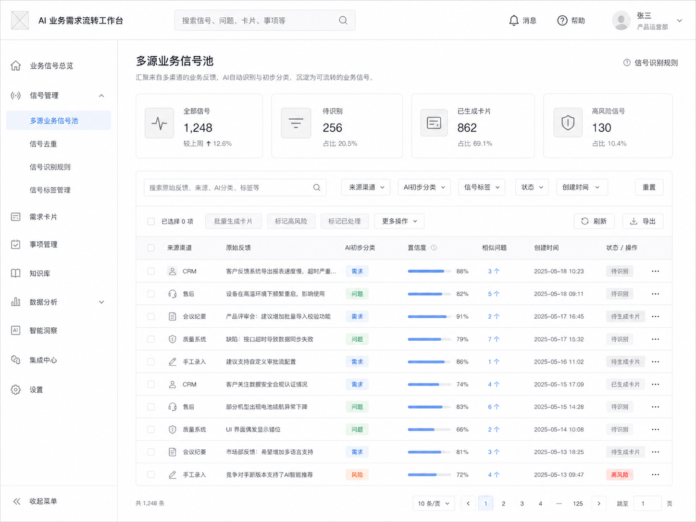
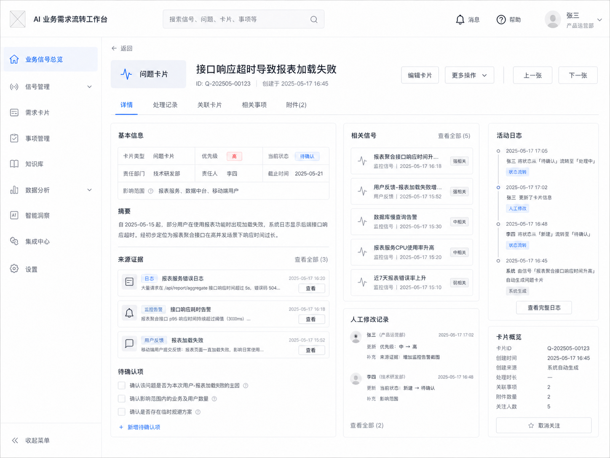
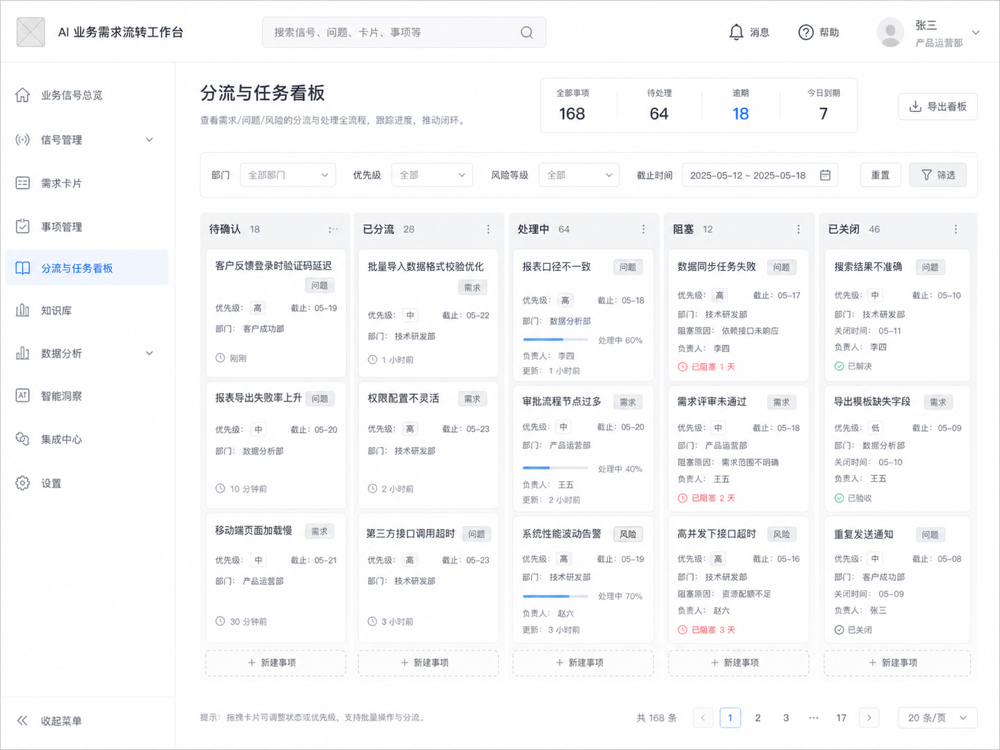
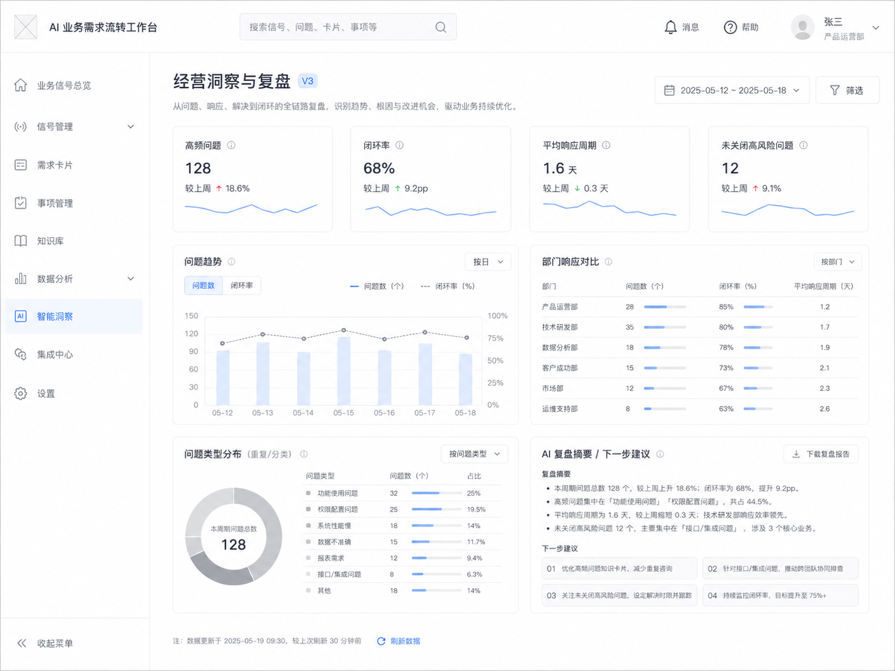

销售、售后、客服、质量、CRM、会议和区域反馈。
项目 02｜流程型 AI 应用
AI 业务需求流转工作台
从多源业务信号到需求分流与任务闭环
会规划的 Agent 很多，能落进流程的 Agent 很少。
这个项目关注的不是让 AI 生成一份需求总结，而是让分散在销售、售后、质量、会议和 CRM 中的业务信号，经过 AI 识别、人审确认、责任分流和状态追踪，真正进入组织行动闭环。
AI 识别与卡片初稿，人确认类型、优先级和责任方。
闭环状态、重复问题、部门响应和规则迭代。
一个“后排空间反馈”，不该死在销售、CRM、售后和会议之间。
真正的问题不是客户说了一句话，而是这句话有没有被组织识别、分流、追踪和复盘。AI 的价值也不只是总结反馈，而是把分散信号转化为可处理的需求、风险和行动。
02｜产品形态
产品形态总览：持续运行的业务信号工作台
先用一个低保真界面说明这个项目的产品形态：它不是抽象流程图，而是围绕新增信号、待确认卡片、高风险问题、未关闭事项和部门响应情况持续运行的工作台。

03｜业务问题
业务问题：企业不是没有反馈，而是缺少持续运行的业务信号处理机制
在传统企业中，销售、售后、客服、质量、CRM 和会议每天都会产生大量业务信号，但这些信号经常散落在不同系统和沟通渠道中，没有稳定进入产品、质量、销售、供应链和管理决策流程。
入口分散
反馈散落在销售、售后、客服、会议、CRM 等入口。
难以判断
需求、问题、风险、情绪和噪音混在一起。
找不到责任方
不知道该由产品、质量、销售、供应链还是运营处理。
推进靠人工
任务推进依赖群聊、表格和人工催办。
趋势后置
管理层看到的是事后总结，而不是持续变化的业务趋势。
没有 AI 时：业务信号如何流失
销售 / 售后 / CRM反馈进入不同系统和沟通渠道
会议 / 表格 / 群聊线索被临时整理，口径不统一
人工判断依赖经验判断类型、优先级和责任方
人工推进状态散落，阻塞和延期难以暴露
事后汇总复盘滞后，难以形成持续业务趋势
04｜贯穿样例
贯穿样例：一个客户反馈如何从一线信息变成组织行动？
以下是场景化推演，用来说明这个项目的主线机制：一个关于后排空间体验的客户反馈，如何从销售、CRM、售后、会议和市场观察中被识别为同一业务主题。
客户在对比竞品时，多次认为本车型后排空间体验不足。
部分商机停滞原因被标记为“家庭用户顾虑后排舒适性”。
已有车主反馈后排长途乘坐体验一般。
区域经理提到该问题影响部分家庭用户成交。
竞品近期强化“家庭舒适性”和“后排空间”传播。
单点看，每条都只是局部反馈；聚合看，它可能是“产品体验问题 + 销售转化风险”。
单条反馈看似只是销售异议，但跨渠道聚合后，它可能同时指向产品体验问题、销售转化风险和市场传播缺口。
样例链路：从分散反馈到组织行动
销售反馈 + CRM + 售后 + 区域会议家庭用户反复提到后排空间和舒适性顾虑
AI 聚合与识别识别为“产品体验问题 + 销售转化风险”
生成卡片并人审确认优先级、证据是否充分、责任方是否合理
分流与复盘输入产品、销售运营、市场支持形成后续动作
聚合相似反馈
将分散在不同渠道的相似反馈聚合为同一业务主题。
判断业务类型
判断它不是单纯投诉，也不是普通需求，而是产品体验问题 + 销售转化风险。
保留来源证据
提取原始证据片段，标记影响区域、客户群体和潜在业务影响。
生成卡片初稿
生成问题卡片和需求卡片初稿，建议分流给产品、销售运营和市场支持。
追踪后续动作
跟踪该问题是否进入销售话术、产品规划或区域复盘。
确认取舍
人确认类型、优先级、责任方和是否进入正式流程。
05｜AI 接入前后
AI 接入前后：从分散反馈到业务闭环
AI 不是替代人做最终决策，而是在业务流中承担信号识别、分类聚类、证据提取、卡片初稿、分流建议和风险提醒；人负责确认分类、判断优先级、确认责任方、决定是否进入正式流程和是否关闭任务。
改造前
- 多源业务信号
- 人工收集
- 人工判断问题类型
- 会议协调
- 手动分流责任部门
- 群聊 / 表格 / 会议纪要追踪
- 周报 / 月报复盘
- 部分经验沉淀，大量信号流失
改造后
- 多源业务信号
- AI 识别 / 分类 / 聚类
- 证据提取与相似问题匹配
- 需求 / 问题 / 风险卡片初稿
- 人工确认与修正
- 分流到责任部门
- 状态追踪与风险提醒
- 经营洞察 / 规则沉淀
- 反哺分类规则与处理路径
识别信号、分类聚类、提取证据、生成卡片初稿、给出分流建议和风险提醒。
确认分类、判断优先级、确认责任方、决定是否进入正式流程、对外结论和任务关闭。
06｜AI 介入点
AI 介入点：预识别、证据提取、卡片初稿与分流建议
AI 不直接替代业务负责人决策，而是先完成跨源信号识别、聚类、证据提取和卡片初稿。关键节点仍由人确认：是否生成正式卡片、如何确定优先级、责任部门是谁、是否关闭、是否沉淀为规则。
AI 介入点：从信号识别到复盘洞察
信号进入AI 识别有效反馈与噪音
问题判断分类、聚类、标签化
证据整理提取来源片段和上下文
卡片生成需求 / 问题 / 风险初稿
分流派发人确认责任方和路径
状态追踪暴露阻塞和未关闭事项
经营复盘生成趋势摘要和复盘草稿
| 业务节点 | AI 角色 | 人的角色 |
|---|---|---|
| 信号进入 | 识别有效反馈与噪音 | 判断是否纳入正式流程 |
| 问题判断 | 分类、聚类、标签化 | 确认类型是否正确 |
| 证据整理 | 提取来源片段和上下文 | 判断证据是否足够 |
| 卡片生成 | 生成需求 / 问题 / 风险卡片初稿 | 修改标题、背景、优先级 |
| 分流派发 | 推荐责任部门和下一步动作 | 确认责任方和处理路径 |
| 状态追踪 | 暴露阻塞、延期和未关闭事项 | 推动组织协同 |
| 经营复盘 | 生成趋势摘要和复盘草稿 | 判断是否沉淀为规则或策略 |

07｜轻量业务信号层
产品架构判断：为什么需要轻量 AI 业务信号层？
本项目不重做 CRM、售后、质量或项目管理系统，而是在既有系统之间增加一个轻量 AI 业务信号层。它负责跨源信号识别、证据追溯、人审分流、状态同步和规则迭代，让分散在不同系统中的业务反馈进入同一个需求 / 问题 / 风险闭环。
模型输出不能自动进入流程
基础模型可以总结文本、抽取信息、生成卡片初稿，但它不知道企业内部的产品线、区域规则、责任部门、历史处理习惯、流程状态和人审记录。
同一问题会散落在多个系统
CRM、售后、质量和项目管理系统各自管理局部对象，但同一个业务问题可能同时出现在销售异议、售后投诉、质量记录和区域会议里。
补足跨源识别和闭环承接
它不替代既有系统，而是在系统之间补足跨源信号聚合、AI 识别与结构化、证据追溯、人审分流、状态同步、规则迭代和经营复盘。
轻量 AI 业务信号层：不替代系统，而是连接系统
既有系统CRM / 售后 / 质量 / 会议 / 项目管理
轻量 AI 业务信号层跨源聚合、AI 识别、证据追溯、人审分流、状态同步、规则迭代
可确认对象需求卡片 / 问题卡片 / 风险卡片
组织响应产品 / 销售 / 质量 / 供应链 / 管理层

08｜核心产品责任单元
核心产品责任单元：从信号池到组织行动闭环
这个项目的核心不是“生成需求卡片”，而是把信号池、AI 识别、卡片、人审、分流、状态追踪和经营洞察组织成一条可推进的主链路。
主链路：信号池 → AI 识别 → 卡片 → 人审 → 分流 → 复盘
输入层
多源业务信号池
来源：销售、售后、客服、质量、CRM、会议、区域反馈。
作用：统一承接分散反馈，保留来源和原文证据。
识别层
AI 识别与分类
能力：分类、聚类、打标签、提取证据、识别重复主题和相似问题。
作用：把噪音和有效信号先分开。
承接层
需求 / 问题 / 风险卡片
能力：卡片分型、证据片段、影响范围、初步责任方。
作用：把反馈转成可确认、可分流、可追踪的业务对象。
确认层
人工确认
能力：确认类型、优先级、责任方、是否进入正式流程。
作用：让 AI 建议进入人的判断和取舍。
执行层
分流与状态追踪
能力：责任部门、任务看板、延期提醒、阻塞标记和关闭记录。
作用：减少“谁在处理、处理到哪里”的不确定性。
复盘层
经营洞察与规则沉淀
能力：高频问题、部门响应、闭环率和趋势变化。
作用：反哺规则、处理路径和组织复盘。


信号
来自 CRM、售后、销售、质量、会议等入口的原始业务信号，保留来源和上下文。
卡片
经过 AI 识别和人审确认后的需求 / 问题 / 风险对象，包含证据、类型和建议责任方。
任务
进入分流和状态追踪的后续动作，记录责任方、处理状态、阻塞点和复盘结论。
09｜关键界面
页面原型：业务信号如何被看见、确认和追踪
这个项目需要承接六个核心界面，分别服务管理总览、信号进入、AI 识别、人审确认、分流推进和经营复盘。
让管理层和流程负责人看到当前业务信号健康度。
让散落反馈先进入统一信号池，避免信息流失。
展示分类、置信度、证据片段、相似问题和人工纠错入口。
把业务信号转化为可以被推进和追踪的最小产品责任单元。
让组织行动透明化，减少“谁在处理、处理到哪里”的不确定性。
将一线反馈、问题闭环和部门响应转化为管理层可用的经营洞察。
10｜产品演进路径
产品演进路径：从看见信号到形成机制
版本演进不是功能越做越多，而是组织响应能力的演进：先让企业看见分散信号，再让信号进入行动，最后让闭环反哺管理机制。
让企业看见信号。
把散乱反馈变成可识别、可管理的信号池。
核心能力让信号进入行动。
把需求 / 问题 / 风险卡片分流到责任部门，并追踪状态。
核心能力让闭环反哺管理。
把闭环数据沉淀为趋势洞察、处理规则和组织复盘。
核心能力这条版本线不是功能堆叠，而是 AI 从信息处理逐步进入组织响应机制的过程：看见信号 → 推动行动 → 形成机制。

11｜验证方式与项目边界
验证方式与项目边界
这是一个场景化 AI 产品设计案例，用传统企业典型业务流来推演 AI 如何进入业务信号流转场景。它不声明已经在真实车企或制造业公司上线，也不包装成真实业务增长结果。
用模拟或脱敏样例信号验证 AI 是否能完成识别、分类、证据提取、卡片生成、人审和分流流程。
如果进入企业真实试点，可用分类准确率、人工修改率、卡片确认率、责任方确认率、闭环率、平均关闭周期和部门响应效率评估产品效果。
| 评估维度 | 示例指标 |
|---|---|
| AI 识别质量 | 分类准确率、漏识别率、证据片段命中率、人工修改率 |
| 流程效率 | 信号到卡片时间、责任方确认时间、平均关闭周期 |
| 业务闭环 | 问题闭环率、可进入产品规划的需求数量 |
| 组织协同 | 责任方确认率、未关闭问题比例、复盘结论复用次数 |
不声称真实车企 / 制造业已上线；不声称已取得投诉下降、成交提升或成本节约；不替代业务负责人做最终判断；不做完全自动派单；不替代 CRM / 售后 / 质量 / 项目管理系统；不处理高敏感或强合规审批决策。
这个项目要证明的不是“我做了一个需求卡片工具”，而是我能从传统企业业务流出发，判断 AI 应该在哪些节点介入，并把识别、证据、人审、分流、追踪和复盘组织成一个可推进的流程型 AI 产品责任单元。